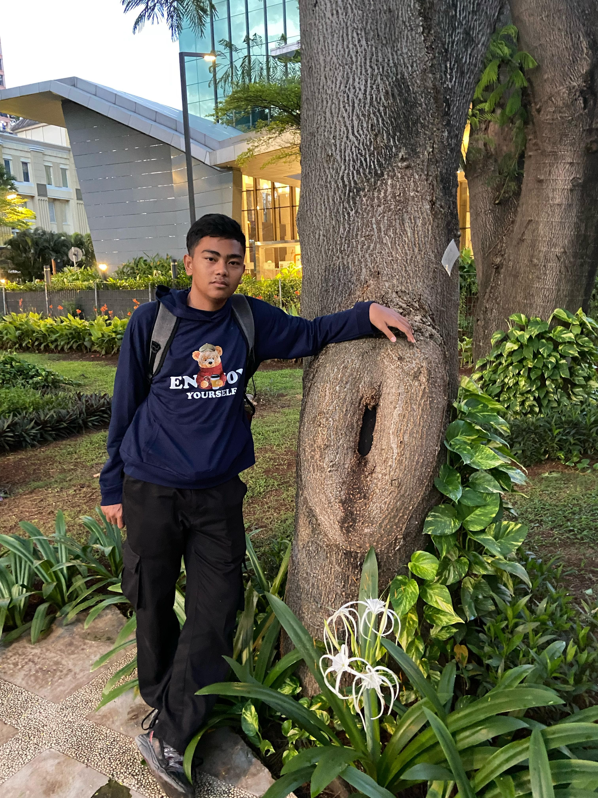

PORTOFOLIO
About Me
Halo, saya adalah seseorang yang baru belajar html
Gambar
Kerjaan
saat ini saya belum punya kerjaan beneran, ada sih tapi kerjaan pkl wkwk
Halo, saya adalah seseorang yang baru belajar html
saat ini saya belum punya kerjaan beneran, ada sih tapi kerjaan pkl wkwk